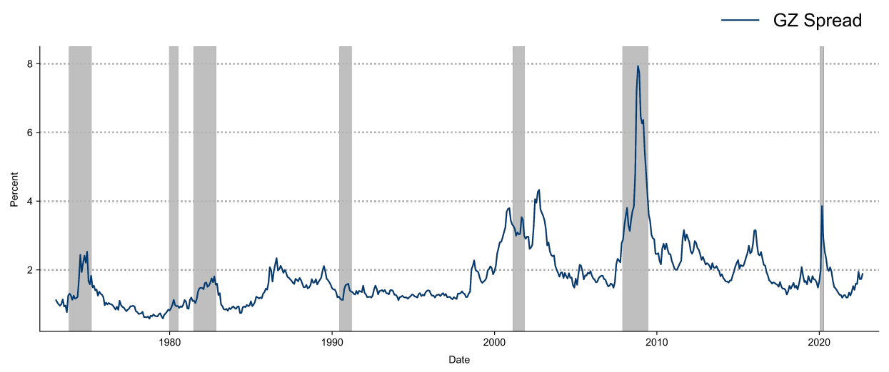
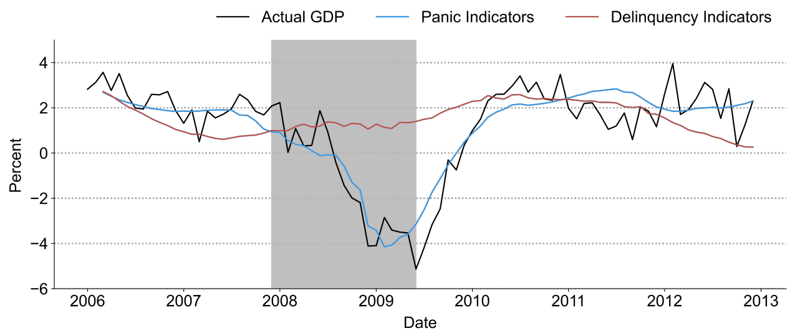
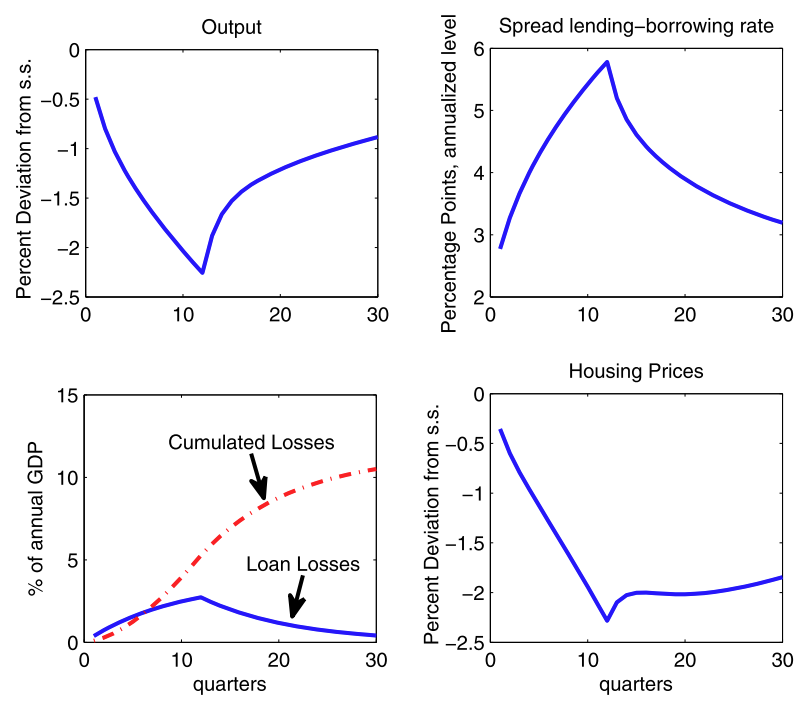
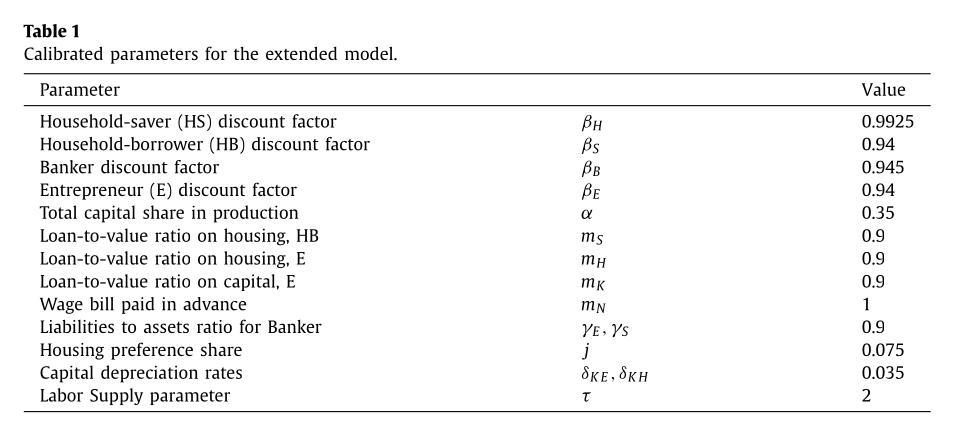
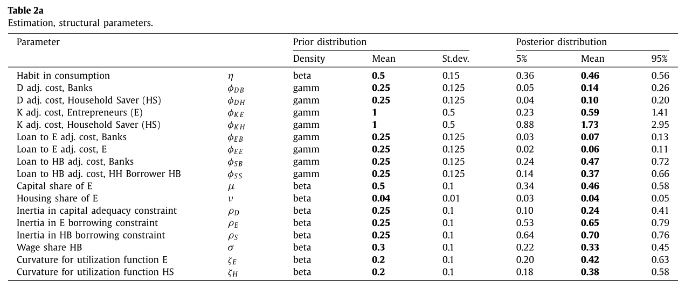
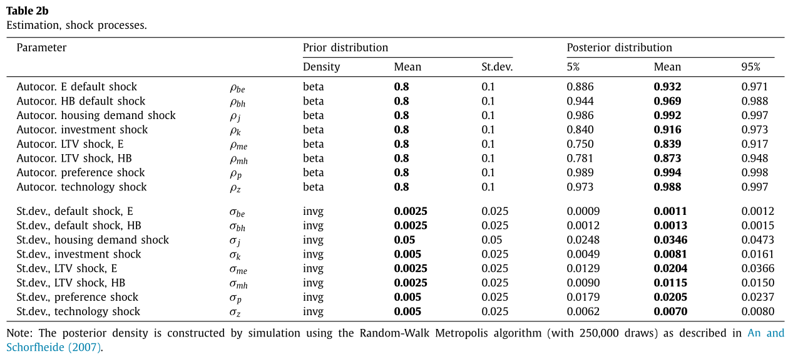
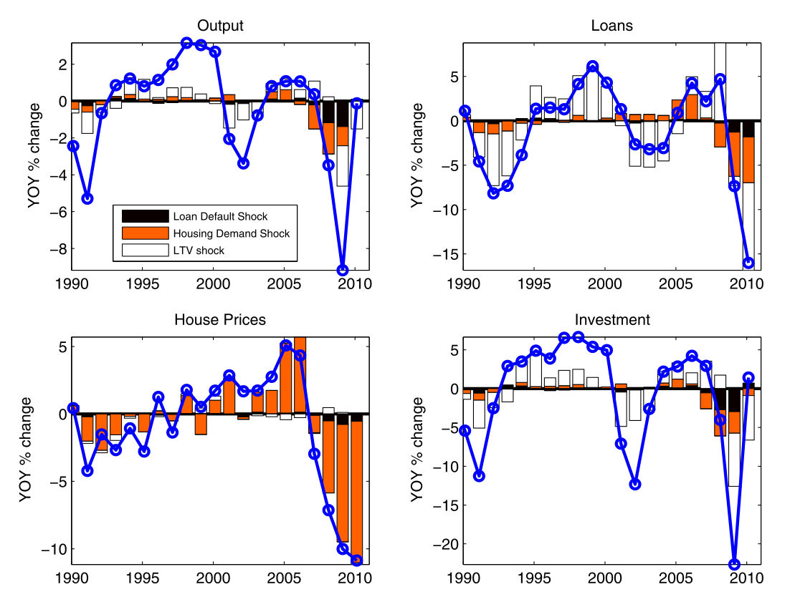
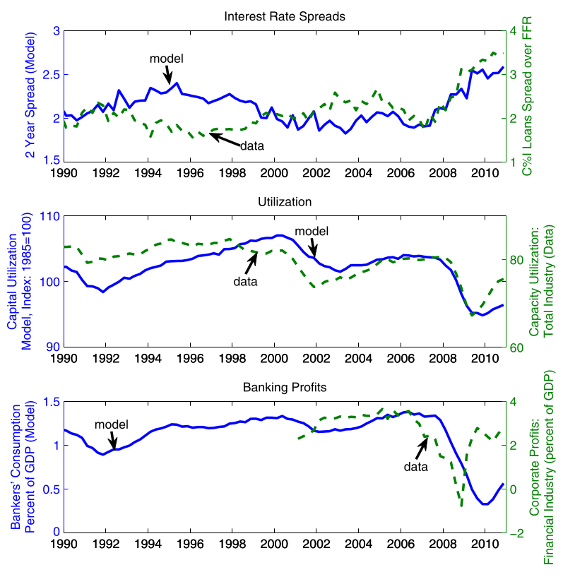
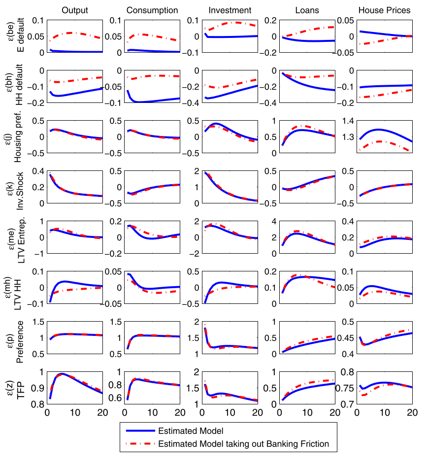
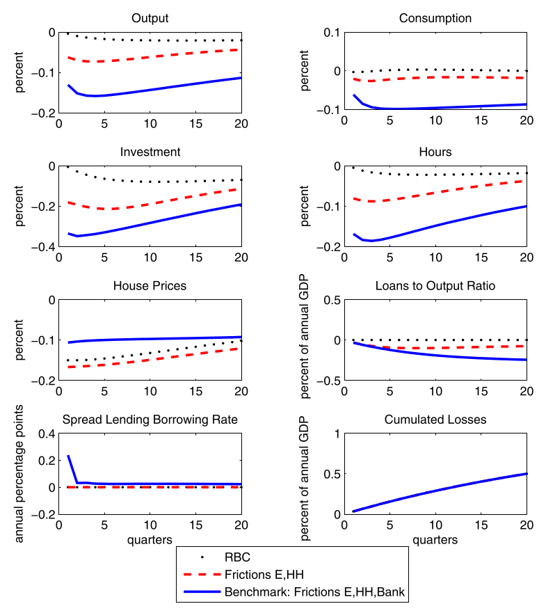

Macro II - Fluctuations - ENSAE, 2025-2026
2026-04-22
Ben Bernanke
président de la Fed (2006-2014), succédant à Alan Greenspan
surnommé Helicopter Ben
était un spécialiste de la Grande Dépression…
…et a ensuite dû faire face à la Grande Récession
a reçu le prix Nobel en 2022 avec Diamond et Dybvig
Son discours de réception est en ligne
Les marchés du crédit sont cruciaux pour comprendre :
Prime de financement externe
Le coût total d’un prêt pour un emprunteur donné (y compris les coûts liés aux covenants, aux exigences de collatéraux, etc.), moins le taux d’intérêt sans risque (par exemple le rendement des titres publics).
Un enseignement clé de la littérature sur l’intermédiation financière
Accélérateur financier1 :


Je considère une économie en temps discret.
L’économie comprend trois types d’agents : les ménages, les banquiers et les entrepreneurs. Chaque type a une masse unitaire.
Les ménages travaillent, consomment et achètent de l’immobilier, et placent des dépôts à une période auprès d’une banque. Le secteur des ménages est agrégativement épargnant net.
Les entrepreneurs accumulent de l’immobilier, embauchent des ménages et empruntent aux banques.
Entre ménages et entrepreneurs, les banquiers intermédient les fonds. La nature de l’activité bancaire implique que les banquiers sont emprunteurs vis-à-vis des ménages et prêteurs vis-à-vis du secteur dépendant du crédit, c’est-à-dire les entrepreneurs.
Les préférences sont construites de façon à ce que deux frictions coexistent et interagissent à l’équilibre : d’abord, les banquiers sont contraints en crédit dans la quantité qu’ils peuvent emprunter aux épargnants patients ; ensuite, les entrepreneurs sont contraints en crédit dans la quantité qu’ils peuvent emprunter aux banquiers.
L’agent représentatif choisit le logement \(H_{H,t}\), la consommation \(C_{T,t}\) et le temps de travail \(N_{H,t}\) pour résoudre
\[\max E_t \sum_{t=0}^{\infty} \beta^t_H \left( \log C_{H,t} + j \log H_{H,t} + \tau \log(1-N_{H,t}) \right)\]
où \(\beta_{H,t}\) est le facteur d’actualisation et \(j,\tau\) deux paramètres de préférence.
. . .
sous la contrainte budgétaire :
\[C_{H,t} + D_t + q_t \left( H_{H,t}- H_{H,t-1} \right) = R_{H,t-1} D_{t-1} + W_{H,t} N_{H,t} + \epsilon_t\]
où :
On obtient les conditions d’optimalité suivantes :
\[\frac{1}{C_{H,t}} = \beta_H E_t \left( \frac{1}{C_{H,t+1}} R_{H,t} \right)\] \[\frac{q_t}{C_{H,t}} = \frac{j}{H_{H,t}} + \beta_H E_t \left( \frac{q_{t+1}}{C_{H,t+1}} \right)\] \[\frac{W_{H,t}}{C_{H,t}} = \frac{\tau}{1-N_{H,t}}\]
L’entrepreneur représentatif choisit la consommation \(C_{E,t}\), l’immobilier \(H_{H,t}\), la production \(Y_t\), le temps de travail \(N_{E,t}\), la dette \(L_{E,t}\): \[\max E_0 \sum_{t=0}^{\infty} \beta^t_E \log C_{E,t}\]
sous :
\[C_{E,t} + q_t \left( H_{E,t} - H_{E,t-1} \right) + R_{E,t} L_{E,t-1} + W_{H,t} N_{E,t} + a c_{EE,t} = Y_t + L_{E,t}\]
\[Y_t = H^{\nu}_{E,t-1} N^{1-\nu}_{E,t}\]
\[ L_{E,t} \leq m_H E_t \left( \frac{q_{t+1}}{R_{E,t+1}}H_{E,t} \right) - m_N W_{H,t} N_{E,t} \tag{1}\]
\(L_{E,t}\) sont les prêts à l’entrepreneur, au rendement brut \(R_{E,t}\)
\(c_{EE,t}=\frac{\phi_{EE}}{2}\frac{\left(L_{E,t}-L_{E,t-1}\right)^ 2}{L_E}\) avec \(L_E\) l’état stationnaire de \(L_{E,t}\)
Contrainte d’emprunt :
\[ L_{E,t} \leq m_H E_t \left( \frac{q_{t+1}}{R_{E,t+1}}H_{E,t} \right) - m_N W_{H,t} N_{H,t} \tag{2}\]
Hypothèse : les entrepreneurs actualisent davantage le futur que les ménages et les banquiers
\[\beta_E < \frac{1}{\gamma_E \frac{1}{\beta_H} + (1-\gamma_E)\frac{1}{\beta_B}}\] avec \(\gamma_E\in[0,1]\)
On obtient les conditions d’optimalité suivantes
\[\left( 1- \lambda_{E,t} - \frac{\partial ac_{LE,t}}{\partial L_{E,t}}\right) \frac{1}{c_{E,t}} = \beta_E E_t \left( R_{E,t+1} \frac{1}{c_{E,t+11}}\right)\]
\[\left( q_t- \lambda_{E,t} m_H E_t \left( \frac{q_{t+1}}{R_{E,t+1}} \right) \right)\frac{1}{c_{E,t}} = \beta_E E_t \left( \left(q_{t+1} + \frac{\nu Y_{t+1}}{H_{E,t}} \right) \frac{1}{c_{E,t+1}}\right) \]
\[\frac{(1-\nu)Y_t}{1+m_N \lambda_{E,t}}=W_{H,t} N_{H,t}\]
Commentaire : la contrainte de crédit introduit un écart entre le coût des facteurs et leur produit marginal.
Le banquier représentatif maximise sa consommation privée \(C_{B,t}\)
\[\max E_0 \sum_{t=0}^{\infty} \beta^t_B \log C_{B,t}\]
\[C_{B,t} + R_{H,t-1} D_{t-1} + L_{E,t} + a c_{EB,t} = D_t + R_{E,t} L_{E,t-1} - \epsilon_t\]
où :
\(D_t\) : dépôts des ménages
\(L_{E,t}\) : prêts aux entrepreneurs
\(a c_{EB,t} = \frac{\phi_{EB}}{2} \frac{(L_{E,t-L_{E,t-1}})^2}{L_E}\) est un coût d’ajustement quadratique1
la capacité à transformer les dépôts en prêts est limitée par une contrainte d’emprunt2
\[D_t \leq \gamma_E \left( L_{E,t} - E_t \epsilon_{t+1} \right)\]
Notons :
Conditions d’optimalité :
\[1-\lambda_{B,t} = E_t \left( m_{B,t} R_{H,t} \right) \tag{3}\]
\[1-\gamma_{E} \lambda_{B,t} + \frac{\partial ac_{EB,t}}{\partial L_{E,t}} = E_t \left( m_{B,t} R_{E,t+1} \right) \tag{4}\]
Ces deux équations expliquent l’écart entre le taux de dépôt et le taux de prêt (la prime d’intermédiation)
\[1-\lambda_{B,t} = E_t \left( m_{B,t} R_{H,t} \right)\]
\[1-\gamma_{E} \lambda_{B,t} + \frac{\partial ac_{EB,t}}{\partial L_{E,t}} = E_t \left( m_{B,t} R_{E,t+1} \right)\]
Interprétation :
Conditions d’equilibre sur logement :
\[H_{E,t} + H_{H,t} = 1\]
Conditions d’equilibre sur les marches du travail :
\[N_{H,t} = N_{E,t}\]
Conditions d’equilibre sur le marché des biens:
\[Y_t = C_{H,t} + C_{E,t} + C_{E,t} + a c_{EE,t} + a c_{EB,t}\]
Pour les ménages :
\[R_H=\frac{1}{\beta_H}\]
Pour les banquiers :
Equation 3 et Equation 4 impliquent que tant que \(\beta_B<\beta_H\), les banquiers sont contraints en crédit
Avec \(\gamma_{E}\) inférieur à 1, il existe un spread entre le rendement des prêts et celui des dépôts :
\[\lambda_B = 1-\beta_B R_H = 1-\frac{\beta_B}{\beta_H}>0\]
\[R_E = \frac{1}{\beta_B} - \gamma_E \left( \frac{1}{\beta_B} - \frac{1}{\beta_H} \right)>R_H\]
Pour les entrepreneurs
Les entrepreneurs sont contraints si \(\beta_E R_E<1\). Ce qui est équivalent à \[\frac{1}{\beta_E}=\gamma_E \frac{1}{\beta_H} + (1-\gamma_E) \frac{1}{\beta_B}\]
Effet :
Hypothèse technique : à l’état stationnaire, les contraintes sont saturantes. Iacoviello suppose qu’elles le restent dans un voisinage de l’état stationnaire.
Période de temps : 1 trimestre
Facteurs d’actualisation :
Choix des paramètres de levier de sorte que \(R_H=3\%\) et \(R_E=5\%\).
Coûts d’ajustement : \(\phi_{EE}=\phi_{EB}=0.25\)
Poids du loisir dans l’utilité : \(\tau=2\) (temps de travail actif = 1/2 et élasticité de Frisch1 proche de 1).
Part du logement dans la production : \(\nu=0.05\)
Paramètre de préférence pour le logement \(j=0.075\) : ratio richesse immobilière / production = 3,1 (0,8 commercial, 2,3 résidentiel)
Levier :
Dynamique du spread d’intermédiation
\[E_t \left( R_{E,t+1} \right) - R_{H,t} = \frac{\lambda_{B,t}}{m_{B,t}}(1-\gamma_E)\]
Le choc \(\epsilon_t\) est calibré sur les pertes historiques sur prêts (montants de dépréciation de dette)
On a \[\epsilon_t = 0.9 \epsilon_{t-1} + \iota_t\]
La déviation exogène est la suivante :

Le modèle complet contient :
patients : prêteurs aux banques
impatients :
Modèle estimé par une approche bayésienne de 1985 à 2010




Un modèle estimé peut être utilisé pour identifier les chocs.

Le modèle prédit aussi d’autres moments qui n’étaient pas ciblés :
Le modèle FBC montre que les chocs financiers ont probablement été un moteur de la crise financière (🤔)
Mais il manque :

